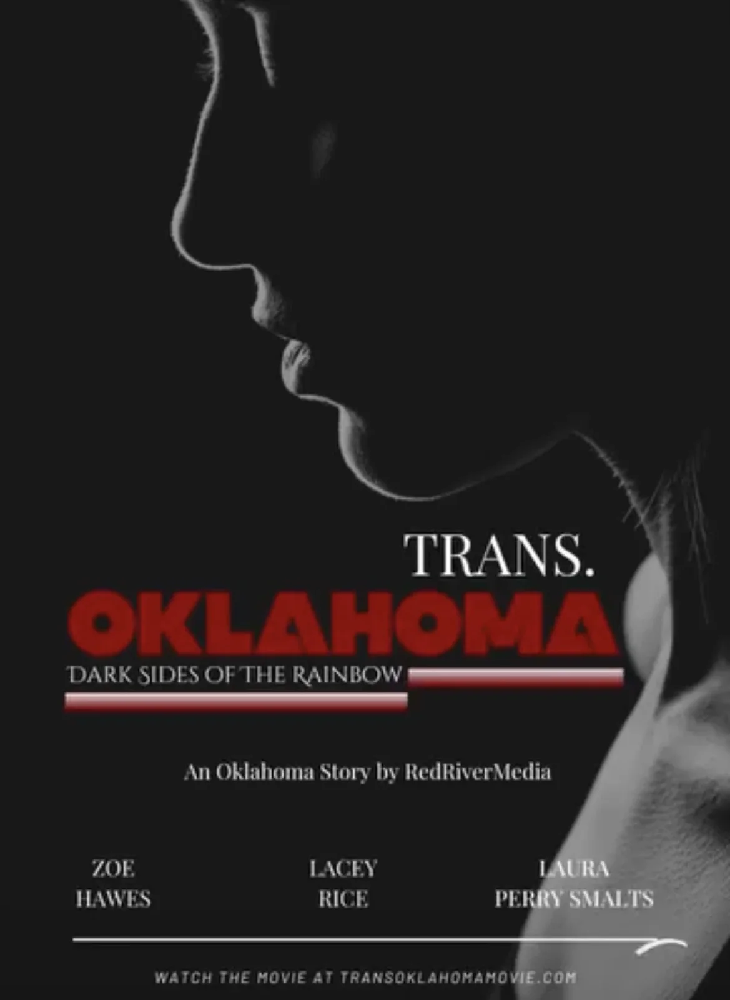
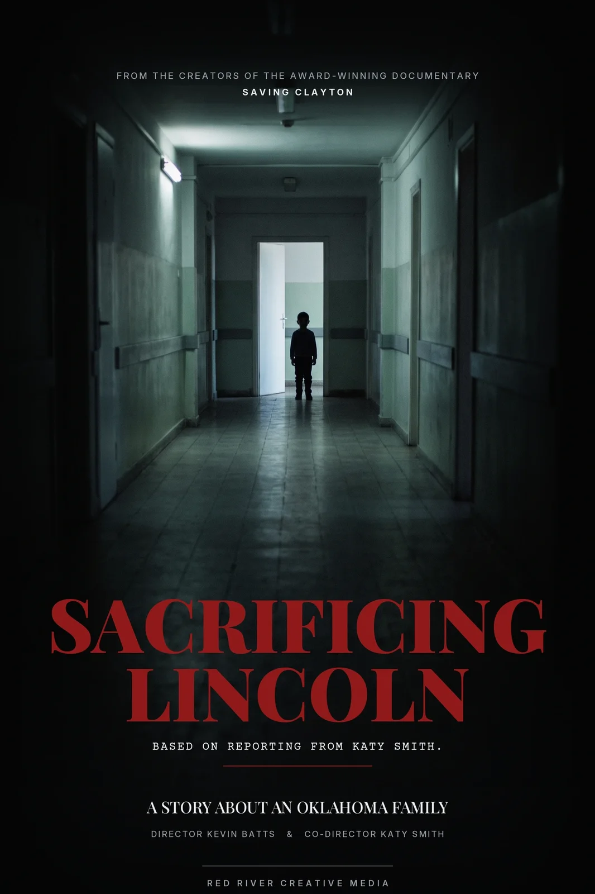
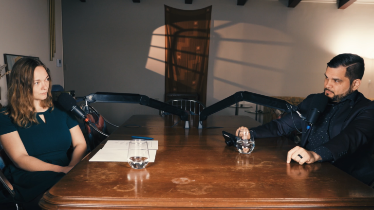

Portfolio
Documentaries, courses, one film in production.
-

2023 / Award winner
Saving Clayton
An Oklahoma family's grief becomes their fight to be heard.
About the film
-

Released
Trans Oklahoma
Dark Sides of the Rainbow
Lived accounts of transition, detransition, family relationships and Christian faith.
About the film
-

Released
Oasis in Atlanta
A pastor, his son Bob, and a family archive of Atlanta's civil rights years.
About the film
-

In production
Sacrificing Lincoln
One family's separation. A journalist's investigation. Questions of accountability in child welfare.
About the film
-

Courses / Podcast-style production
Relationship Rescue
Should We Stay Together? and Survive & Thrive
Online courses combining teaching and podcast-style conversations with Patrick and Maddie Martinez.
About the project
Have a story in mind? Start with a conversation.